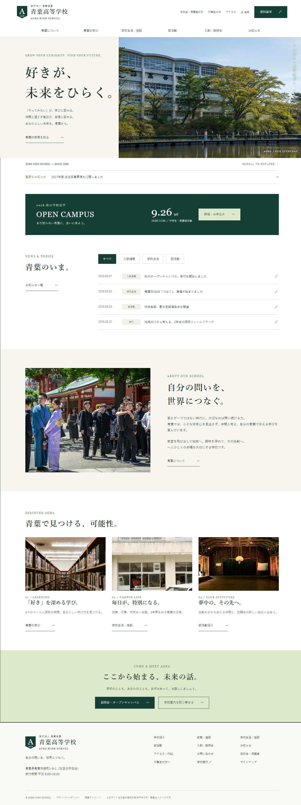
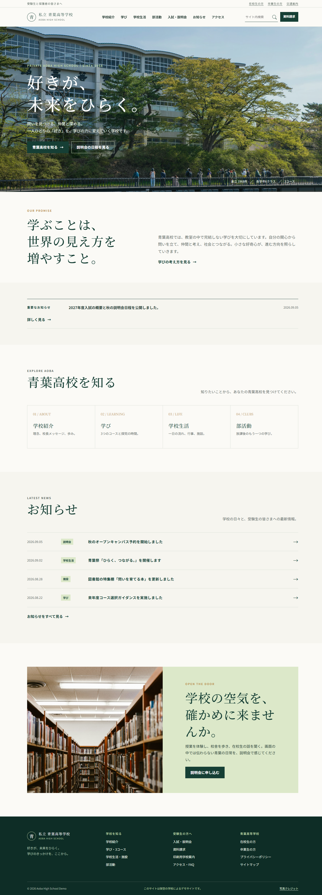
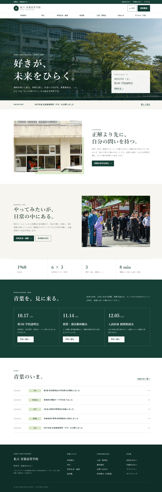
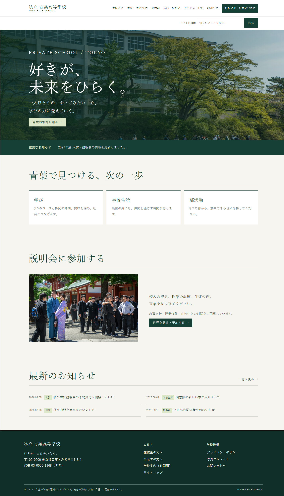
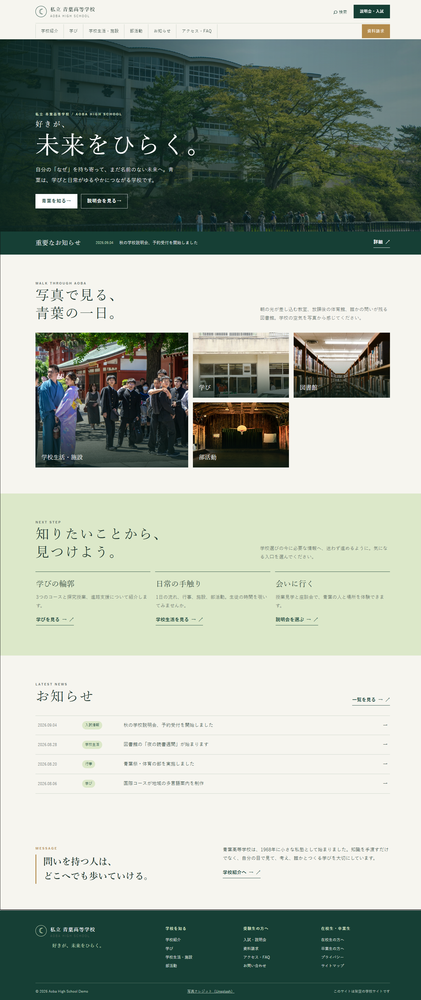
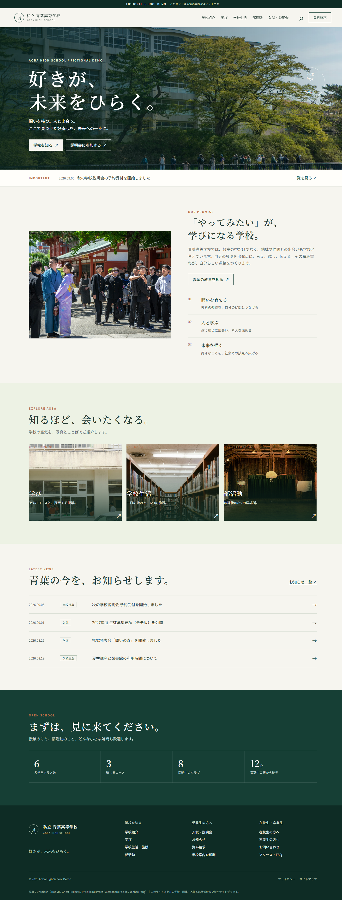

ひとつの設計、6つの青葉。
共通の設計条件をもとに、6つのモデル設定・制作環境で独立して作った架空の学校サイトを並べています。

VARIANT B / XHIGH / PRIORITY REQUESTED
GPT-5.6 Luna / xhigh
写真を大きく背景に使い、教育理念と各情報への案内をつなぐ構成。
サイトBを開く →

VARIANT D / MEDIUM / PRIORITY REQUESTED
GPT-5.6 Luna / medium
同じ設計書と写真を使い、推論をmediumに設定して独立制作した学校サイト。
サイトDを開く →
VARIANT E / HIGH / PRIORITY REQUESTED
GPT-5.6 Luna / high
同じ設計書と写真を使い、推論をhighに設定して独立制作した学校サイト。
サイトEを開く →
VARIANT F / XHIGH SOLO / PRIORITY REQUESTED
GPT-5.6 Luna / 単騎
同じ設計書と写真からLuna xhighが単独制作。親からの修正指示なし。ブラウザ接続不可のため操作検証は未実施。
サイトFを開く →| 計測項目 | Astra | Luna xhigh | ChatGPT Web | Luna medium | Luna high | Luna xhigh 単騎 |
|---|---|---|---|---|---|---|
| 詳細は制作・検証ログをご覧ください。 | ||||||
Astra・Luna xhighは初回、ChatGPT WebはVariant C、Luna medium・highは追加の並行制作です。トークンにはキャッシュ入力を含み、初回制作時間と修正込みの使用量を分けています。Astraは共通準備と検証も担当。Fastはpriorityとして要求し、実配信tierは未確認です。追加2案は素材を最初から用意しており、初回とは準備条件に差があります。単騎版はLuna自身が検証も担当し、親からの修正指示はありません。全サイトとも架空校のデモで、外部送信は行いません。